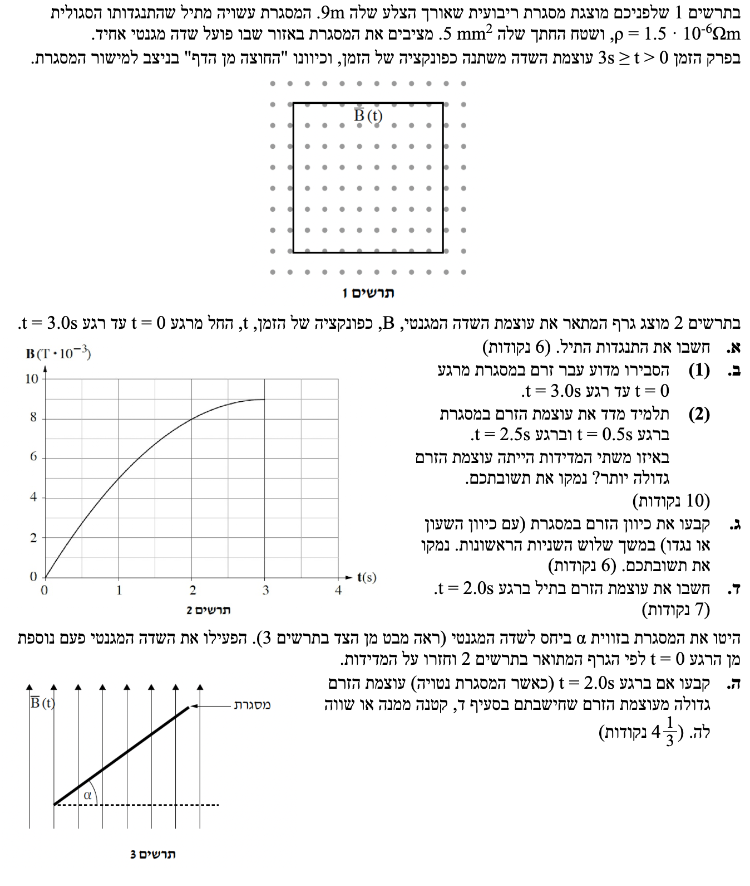
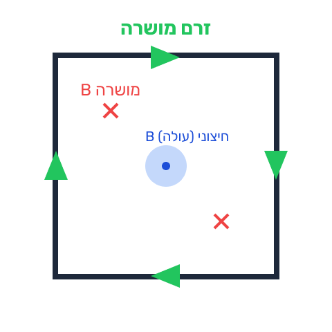
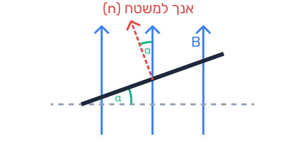

פתרון בגרות בפיזיקה - חשמל 2020
שאלה 6
נושאים: השראה אלקטרומגנטית, חוק פאראדיי, חוק לנץ והתנגדות חשמלית.
עודכן:
--- --:--:--

[תמונת השאלה המקורית]
לא נמצאה תמונה בשם question-image.png באותה תיקייה.
מה נתון:
- מסגרת ריבועית, לכן אורך צלע המסגרת הוא \( a = 9 \text{ m} \).
- התנגדות סגולית של החומר: \( \rho = 1.5 \cdot 10^{-6} \ \Omega \cdot \text{m} \).
- שטח החתך של התיל: \( S = 5 \text{ mm}^2 \).
- שלב 0 - המרת יחידות (MKS): עלינו להמיר את שטח החתך למטר רבוע (\( \text{m}^2 \)). מכיוון שמילימטר הוא \( 10^{-3} \) מטר, השטח הוא:
\( S = 5 \cdot (10^{-3} \text{ m})^2 = 5 \cdot 10^{-6} \text{ m}^2 \).
- אורך התיל הכולל שממנו עשויה המסגרת: המסגרת מורכבת מ-4 צלעות, לכן סך אורך התיל הוא \( l = 4 \cdot a = 4 \cdot 9 = 36 \text{ m} \).
מה מחפשים:
את ההתנגדות החשמלית הכוללת של המסגרת (\( R \)).
נוסחאות ועקרונות בשימוש:
נשתמש בנוסחת ההתנגדות של תיל מתוך דף הנוסחאות:
\( R = \rho \frac{l}{A} \)
(בדף הנוסחאות מסומן שטח החתך באות \( A \), אך בשאלה הוא סומן ב- \( S \). נציב לפי הנתונים שלנו).
הצבה ופתרון:
נציב את הנתונים המומרים לתוך הנוסחה:
\[ R = 1.5 \cdot 10^{-6} \cdot \frac{36}{5 \cdot 10^{-6}} \]
נצמצם את \( 10^{-6} \) במונה ובמכנה ונקבל:
\[ R = \frac{1.5 \cdot 36}{5} = \frac{54}{5} = 10.8 \ \Omega \]
תשובה סופית: התנגדות התיל היא \( 10.8 \ \Omega \).
טיפ מורה:
מלכודת קלאסית בבגרות! שימו לב שיש בשאלה זו התייחסות לשני "שטחים" ולשני "אורכים" שונים:
1. שטח החתך של התיל שעוביו דק מאוד (\( S = 5 \text{ mm}^2 \)) המשמש לחישוב ההתנגדות.
2. שטח המסגרת עצמה (ה"חלון") שנחשב בהמשך עבור השטף המגנטי (\( 9 \text{ m} \times 9 \text{ m} \)).
כמו כן, אורך התיל בנוסחת ההתנגדות הוא היקף המסגרת כולה (\( 36 \text{ m} \)) ולא רק צלע אחת! תמיד חשבו ממה מורכב המעגל שעבורו אתם מחשבים את ההתנגדות.
מה נתון:
- מסגרת סגורה מוליכה נמצאת בתוך שדה מגנטי.
- עוצמת השדה המגנטי משתנה בזמן (ניתן לראות בגרף שעוצמת השדה עולה מרגע \( t=0 \) ועד \( t=3.0\text{s} \)).
מה מחפשים:
הסבר פיזיקלי מדוע עבר זרם במסגרת בפרק זמן זה.
נוסחאות ועקרונות בשימוש:
\( \Phi_B = B A \cos \alpha \) (הגדרת השטף המגנטי)
\( \varepsilon = -N \frac{\Delta \Phi_B}{\Delta t} \) (חוק פאראדיי להשראה אלקטרומגנטית)
\( I = \frac{\varepsilon}{R} \) (חוק אוהם)
הסבר ופתרון:
על פי הגרף הנתון, השדה המגנטי \( B \) משתנה (גדל) במהלך 3 השניות הראשונות.
כתוצאה מכך, השטף המגנטי (\( \Phi_B \)) העובר דרך שטח המסגרת משתנה גם הוא עם הזמן.
על פי חוק פאראדיי, שינוי בשטף מגנטי העובר דרך לולאה מוליכה יוצר בה כא"מ מושרה (\( \varepsilon \)).
מכיוון שהמסגרת מהווה מעגל חשמלי סגור, הכא"מ המושרה מזרים בה זרם מושרה, בהתאם לחוק אוהם (\( I = \frac{\varepsilon}{R} \)).
שינוי השדה המגנטי בזמן גורם לשינוי בשטף המגנטי דרך המסגרת, מה שיוצר כא"מ מושרה לפי חוק פאראדיי. כיוון שהמסגרת סגורה, זורם בה זרם.
טיפ מורה:
מילת הקסם בהסברים אלו היא "סגורה"! אם המסגרת הייתה פתוחה (כמו פרסה), עדיין היה נוצר בה כא"מ (הפרש פוטנציאלים בין הקצוות), אך לא היה זורם בה זרם. תמיד ודאו שאתם מציינים שהמעגל סגור כדי להצדיק היווצרות של זרם הלכה למעשה.
מה נתון:
- ביטוי השדה כפונקציה של הזמן: \( B(t) = (6t - t^2) \cdot 10^{-3} \text{ T} \).
- רגע ראשון: \( t = 0.5 \text{ s} \).
- רגע שני: \( t = 2.5 \text{ s} \).
מה מחפשים:
לקבוע באיזה מן הרגעים עוצמת הזרם גדולה יותר, ולנמק.
נוסחאות ועקרונות בשימוש:
על פי חוק פאראדיי וחוק אוהם יחד, גודל הזרם פרופורציונלי לקצב שינוי השטף, שהוא במקרה שלנו קצב שינוי השדה המגנטי:
\( I = \frac{|\varepsilon|}{R} = \frac{A}{R} \cdot \left| \frac{\Delta B}{\Delta t} \right| \)
מבחינה מתמטית / גרפית, קצב שינוי השדה \( \frac{\Delta B}{\Delta t} \) (או הנגזרת) מייצג את שיפוע המשיק לגרף \( B(t) \).
הצבה ופתרון:
דרך א' (הבנה גרפית)
התבוננות בגרף (תרשים 2) מראה שהעקומה תלולה יותר (השיפוע גדול יותר) בתחילת התנועה, ככל שמתקרבים לשיא הגרף (קודקוד הפרבולה ב- \( t=3 \)), הגרף הופך מתון יותר. לכן, שיפוע המשיק ב- \( t=0.5\text{s} \) גדול משמעותית משיפוע המשיק ב- \( t=2.5\text{s} \). כיוון שגודל הזרם תלוי בשיפוע זה, הזרם גדול יותר ב- \( t=0.5\text{s} \).
דרך ב' (חישוב מתמטי)
נגזור את פונקציית השדה כדי למצוא את קצב השינוי שלה (הנגזרת היא קצב השינוי הרגעי \( \frac{dB}{dt} \)):
\[ \frac{dB}{dt} = \frac{d}{dt} \left( (6t - t^2) \cdot 10^{-3} \right) = (6 - 2t) \cdot 10^{-3} \ \text{T/s} \]
- ברגע \( t=0.5\text{s} \): \( \frac{dB}{dt} = (6 - 2 \cdot 0.5) \cdot 10^{-3} = 5 \cdot 10^{-3} \text{ T/s} \)
- ברגע \( t=2.5\text{s} \): \( \frac{dB}{dt} = (6 - 2 \cdot 2.5) \cdot 10^{-3} = 1 \cdot 10^{-3} \text{ T/s} \)
מכיוון שקצב שינוי השדה גדול יותר ב- \( t=0.5\text{s} \), הכא"מ המושרה גדול יותר, ולכן הזרם גדול יותר ברגע זה.
מסקנה: עוצמת הזרם הייתה גדולה יותר במדידה של רגע \( t=0.5\text{s} \).
טיפ מורה:
הסבר דרך הגרף מעיד על הבנה פיזיקלית ומתמטית טובה יותר של המושג "קצב שינוי" (שיפוע המשיק לעקומה). לכן, מומלץ מאוד לבסס את התשובה על הבנה גרפית ולהשתמש בה בבחינה. במקרים כאלה, מומלץ להשתמש בחישוב המתמטי (הנגזרת) בעיקר ככלי עזר פנימי כדי לבדוק את עצמכם ולהיות בטוחים לחלוטין בתשובה שמסרתם.
מה נתון:
- השדה המגנטי המקורי מכוון "החוצה מן הדף" (מסומן כנקודות).
- במשך שלוש השניות הראשונות, עוצמת השדה הולכת וגדלה.
מה מחפשים:
את כיוון הזרם המושרה במסגרת (עם או נגד כיוון השעון) ונימוק.
נוסחאות ועקרונות בשימוש:
חוק לנץ
כלל יד ימין לזרם ישר
הסבר ופתרון:
השטף המגנטי המכוון החוצה מהדף גדל במהלך שלוש השניות הראשונות.
על פי חוק לנץ, הזרם המושרה יזרום בכיוון שייצור שדה מגנטי משלו (שדה מושרה) שיתנגד לשינוי בשטף.
כדי להתנגד להגדלת השטף החוצה, הזרם המושרה חייב ליצור שדה מגנטי המכוון פנימה לתוך הדף (מסומן ב- \( \otimes \)).
על פי כלל יד ימין (האגודל מצביע פנימה אל תוך הדף בכיוון השדה הרצוי), האצבעות מתעגלות ומראות כי כיוון הזרם חייב להיות עם כיוון השעון.
תרשים עזר - הפעלת חוק לנץ

תשובה סופית: כיוון הזרם הוא עם כיוון השעון (ימינה בחלק העליון של המסגרת).
טיפ מורה:
טעות נפוצה היא להתבלבל בין כיוון השדה לבין מגמת השינוי שלו. זכרו: הזרם המושרה אינו מגיב לכיוון השדה עצמו, אלא לשאלה האם השדה מתחזק או נחלש. גם אם השדה פונה החוצה, תגובת המערכת תהיה שונה לחלוטין (הפוכה) אם ברגע מסוים השדה החיצוני נחלש לעומת מצב שבו הוא מתחזק.
מה נתון:
- רגע הזמן: \( t = 2.0 \text{ s} \).
- שטח המסגרת דרכה עובר השטף: \( A_{frame} = a^2 = 9^2 = 81 \text{ m}^2 \).
- התנגדות המסגרת שחישבנו בסעיף א': \( R = 10.8 \ \Omega \).
- מישור המסגרת ניצב לשדה, לכן הזווית בין השדה המגנטי לאנך למשטח היא \( \alpha = 0^\circ \) (ולכן \( \cos 0^\circ = 1 \)).
מה מחפשים:
את עוצמת הזרם במסגרת (\( I \)) ברגע \( t = 2.0\text{s} \).
נוסחאות ועקרונות בשימוש:
\( |\varepsilon| = \left| -N \frac{\Delta \Phi_B}{\Delta t} \right| = A_{frame} \left| \frac{\Delta B}{\Delta t} \right| \) (המסגרת היא כריכה אחת, \( N=1 \))
\( I = \frac{|\varepsilon|}{R} \)
הצבה ופתרון:
שלב 1: חישוב קצב שינוי השדה
נחשב את קצב שינוי השדה ב- \( t = 2.0\text{s} \) בעזרת הנגזרת שמצאנו בסעיף ב(2):
\[ \left| \frac{dB}{dt} \right|_{t=2.0} = (6 - 2 \cdot 2.0) \cdot 10^{-3} = (6 - 4) \cdot 10^{-3} = 2 \cdot 10^{-3} \ \text{T/s} \]
שלב 2: חישוב הכא"מ המושרה
\[ |\varepsilon| = 81 \cdot 2 \cdot 10^{-3} = 162 \cdot 10^{-3} \text{ V} \]
שלב 3: חוק אוהם למציאת הזרם
\[ I = \frac{162 \cdot 10^{-3}}{10.8} = 15 \cdot 10^{-3} \text{ A} \]
תשובה סופית: עוצמת הזרם ברגע \( t=2.0\text{s} \) היא \( 15 \cdot 10^{-3} \text{ A} \) (או \( 15 \text{ mA} \)).
טיפ מורה:
הקפידו תמיד לחזור על הנתונים הרלוונטיים עבור הסעיף, במיוחד את ערך שטח המסגרת (\( 81 \text{ m}^2 \)) - סטודנטים רבים מציבים בטעות בשלב זה את שטח החתך של התיל מהסעיף הראשון והורסים לעצמם את החישוב כולו!
מה נתון:
- המסגרת מוטה בזווית \( \alpha \) (כמתואר בתרשים 3) כך שמישור המסגרת כבר אינו ניצב לשדה המגנטי.
- עקומת שינוי השדה המגנטי מופעלת שוב בדיוק מאפס כפי שהייתה קודם.
מה מחפשים:
לקבוע האם במצב החדש, עוצמת הזרם ברגע \( t=2.0\text{s} \) גדולה, קטנה או שווה לעוצמת הזרם שחושבה בסעיף הקודם, ולנמק.
נוסחאות ועקרונות בשימוש:
\( \Phi_B = B A \cos \alpha \)
הזווית \( \alpha \) המופיעה בנוסחת השטף היא הזווית בין קווי השדה המגנטי (\( B \)) לבין האנך (הנורמל) למישור המסגרת. כפי שרואים בתרשים 3, המסגרת הוסטה בזווית \( \alpha \) מהקו האופקי (שניצב לשדה), לכן הזווית בין האנך למסגרת לבין קווי השדה היא כעת בדיוק הזווית \( \alpha \).
הסבר ופתרון:
הכא"מ המושרה תלוי בקצב שינוי השטף. במצב החדש, ביטוי השטף מוכפל ב- \( \cos \alpha \):
\[ |\varepsilon_{new}| = A \cdot \cos \alpha \cdot \left| \frac{dB}{dt} \right| = |\varepsilon_{old}| \cdot \cos \alpha \]
מכיוון שהזווית היא בין \( 0^\circ \) ל- \( 90^\circ \) (זווית חדה), ערכו של \( \cos \alpha \) חיובי אך קטן מ-1.
לכן, הכא"מ המושרה במצב המוטה קטן מהכא"מ במצב בו המסגרת הייתה מאונכת לשדה המגנטי במלואה. כתוצאה מכך (לפי חוק אוהם), גם הזרם יהיה קטן יותר.
תרשים עזר - "שטח חוסם" קטן יותר

שימו לב שהזווית בין האנך למשטח לבין קווי השדה שווה לזווית ההטייה של המשטח.
תשובה סופית: עוצמת הזרם תהיה קטנה יותר מהזרם שחושב בסעיף ד'.
טיפ מורה:
הסבר אינטואיטיבי (שווה זהב למי שמתקשה עם טריגונומטריה): דמיינו שקווי השדה המגנטי הם גשם שיורד מלמעלה. כשהמסגרת מאוזנת (ישרה), היא "תופסת" מקסימום טיפות גשם. כשאנחנו מטים אותה, "השטח האפקטיבי" שפונה לעבר הגשם קטן יותר (עד שאם נעמיד אותה במאונך, ב- \( 90^\circ \), היא לא תתפוס כלל גשם!). פחות גשם = פחות שטף = פחות זרם מושרה.